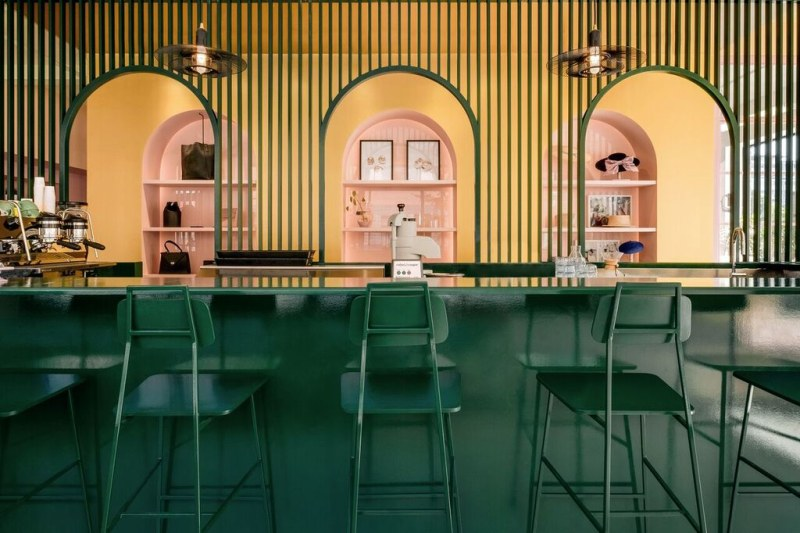
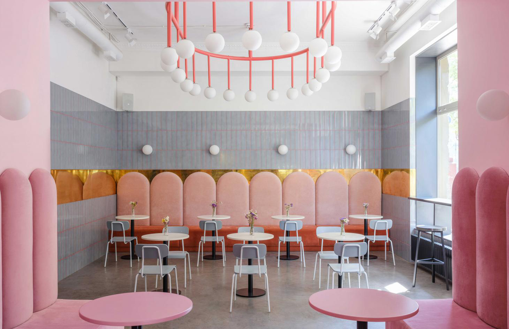
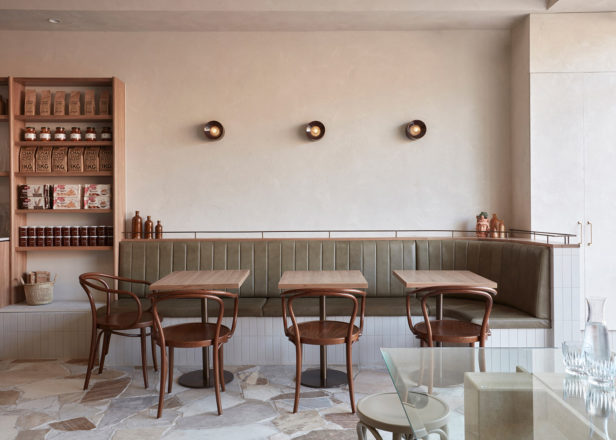

THE CUBAN
For a nolstalgic trip through time and space, meet The Cuban. Walk through the beaded curtains and in an instant, the scent of coffee beans and exotic flowers that once were will engulf your memories. Take your caffeine hit with a side of cigar.
QUEEN SHEILA'S TARTS
Regal yet contemporary, kings and queens from all paths of life rejoice their hedonistic ways here - including the odd celebrity appearance. Queen Sheila herself, on the other hand, is still the centre of conspiracy with many in the gardens questioning her existence.
FRANK'S
Frank's is, frankly, like sitting in your grandmothers bunker - coffee by the filter, table by the stove, cats by the dozen.
BACKGAMMON GAMMONS

Fan of chess, arcade games and gambling your hard earned golden nuggets away? For members only, but once a gammon always a gammon.